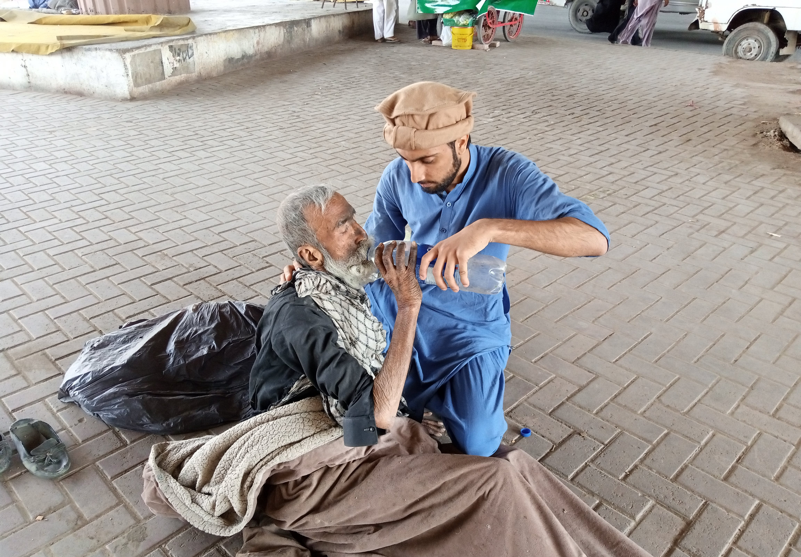
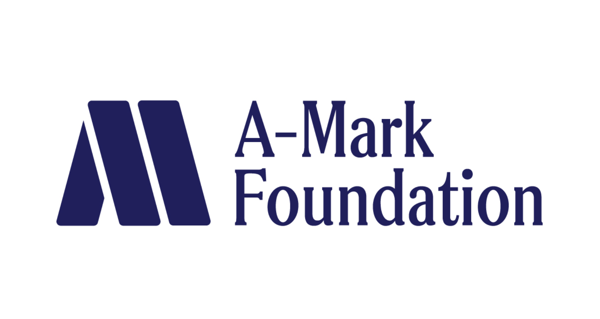

Using Data Analysis to Inform Policy Affecting the Homeless Population in Skid Row, Los Angeles
The issue of homelessness is a complex and multifaceted problem that requires a comprehensive approach. To better understand the policy preferences and priorities of people experiencing homelessness in Skid Row, Los Angeles, The A-Mark Foundation conducted a survey of 100 homeless people in the Skid Row community. This case study explores the tools used by Ataviz Consulting to analyze the survey data and the results, which provide valuable insights for policymakers and organizations working to address homelessness in Los Angeles.
Goal:
Ataviz Consulting was approached by The A-Mark Foundation to provide data analysis for a survey of 100 people experiencing homelessness in Skid Row, Los Angeles. The survey asked participants about their policy preferences and priorities for addressing homelessness. The goal of the project was to gain insight into the policy preferences of people who are currently experiencing homelessness.
Tools:
Ataviz Consulting analyzed the survey data collected by the UCLA Luskin School of Public Affairs and created visualizations to present the results. The data was cleaned, standardized, and coded to categorize responses into distinct policy areas, including healthcare, housing, necessities, resources, sanitation/safety, and other. Respondents who named more than one policy were asked to rank their answers. Ataviz Consulting created customized charts and graphs to help The A-Mark Foundation understand the results as well as to display the results in their online article.

Results:
The survey found that people experiencing homelessness in Skid Row would prioritize healthcare, housing, and necessities if they were the mayor of Los Angeles. However, in the short run, respondents were more concerned with resources, necessities, and sanitation/safety. The focus groups also provided additional insight into the experiences of people experiencing homelessness, including concerns about rules associated with housing programs, security, and the difficulty of completing basic tasks without a safe place to store belongings. The survey results and visualizations created by Ataviz Consulting were presented by The A-Mark Foundation in an article titled “Survey of 100 People Experiencing Homelessness in Los Angeles”. The article provides valuable information for policymakers and organizations working to address homelessness in Los Angeles, highlighting the policy preferences of people with lived experience of homelessness.

Client Testimonial:
"Ataviz Consulting transformed our data into professional-quality visualizations with graphs, infographics, and word clouds. They responded to every email so quickly, and the final product was done well in advance of the promised delivery date. Nicholas is a pleasure to communicate with, and he clearly laid out several options with his recommendation for any complicated decisions. They have a collaborative process and were very patient in working towards the final product."